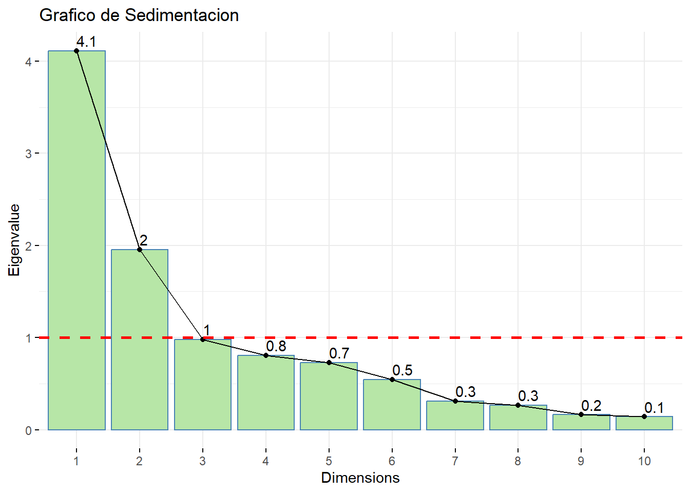
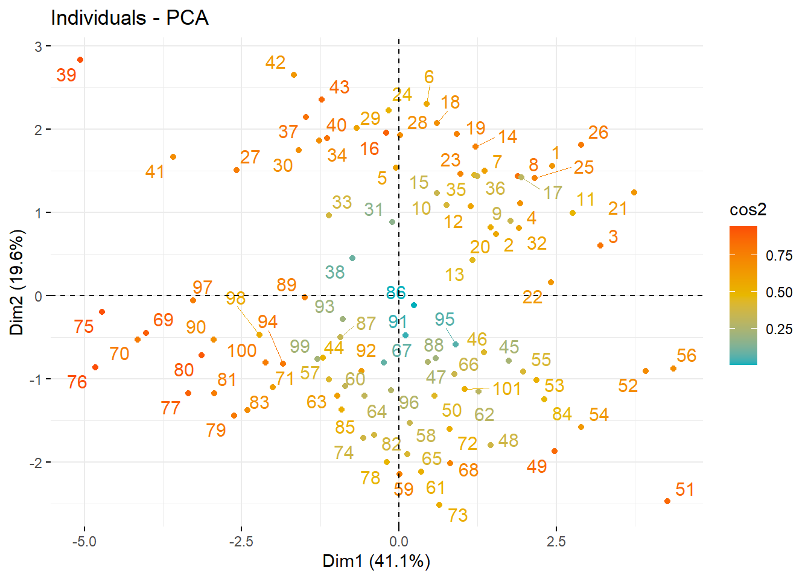
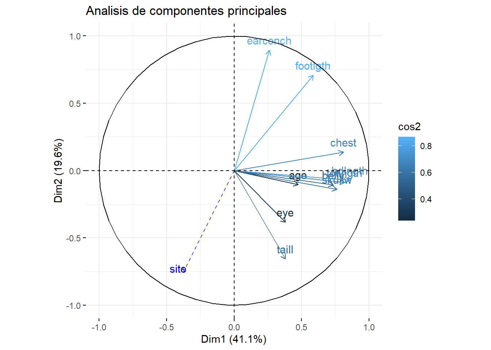

4 Mediciones Morfométricas de 104 zarigueyas capturadas
El marco de datos possum de la librería DAAG, contiene mediciones morfométricas en cada una de 104 zarigueyas capturadas en siete sitios desde el sur hasta el centro de las islas Victoria en Canadá. Realice un ACP para crear un índice de varían las caracterısticas morfológicas de las zarigueyas.
Mediciones de Possum
El marco de datos “possum” consiste en nueve medidas morfométricas en cada uno de los 104 possums de cola de cepillo de montaña, atrapados en siete sitios australianos desde el sur de Victoria hasta el centro de Queensland. El marco de datos “fossum” es el subconjunto de “possum” que tiene medidas para las 43 hembras.
# Carga el conjunto de datos possum
data(possum)
# Omision de datos faltantes
possum <- na.omit(possum)
# Marco de datos tratados
ps <- data.frame(site = possum$site, Pop = possum$Pop,
sex = possum$sex, age = possum$age, hdlngth = possum$hdlngth,
skullw = possum$skullw, totlngth = possum$totlngth,
taill = possum$taill, footlgth = possum$footlgth,
earconch = possum$earconch, eye = possum$eye,
chest = possum$chest, belly = possum$belly)
head(ps) %>% kable()| site | Pop | sex | age | hdlngth | skullw | totlngth | taill | footlgth | earconch | eye | chest | belly |
|---|---|---|---|---|---|---|---|---|---|---|---|---|
| 1 | Vic | m | 8 | 94.1 | 60.4 | 89.0 | 36.0 | 74.5 | 54.5 | 15.2 | 28.0 | 36 |
| 1 | Vic | f | 6 | 92.5 | 57.6 | 91.5 | 36.5 | 72.5 | 51.2 | 16.0 | 28.5 | 33 |
| 1 | Vic | f | 6 | 94.0 | 60.0 | 95.5 | 39.0 | 75.4 | 51.9 | 15.5 | 30.0 | 34 |
| 1 | Vic | f | 6 | 93.2 | 57.1 | 92.0 | 38.0 | 76.1 | 52.2 | 15.2 | 28.0 | 34 |
| 1 | Vic | f | 2 | 91.5 | 56.3 | 85.5 | 36.0 | 71.0 | 53.2 | 15.1 | 28.5 | 33 |
| 1 | Vic | f | 1 | 93.1 | 54.8 | 90.5 | 35.5 | 73.2 | 53.6 | 14.2 | 30.0 | 32 |
[1] 101 13El marco de datos contiene las siguientes columnas:
case: número de observación
site: uno de los siete lugares donde se atraparon los possums. Los sitios fueron, en orden, Cambarville, Bellbird, Whian Whian, Byrangery, Conondale, Allyn River y Bulburin.
Pop: un factor que clasifica los sitios como “Vic” (Victoria), “other” (Nueva Gales del Sur) o “Queensland”.
sex: un factor con niveles “f” (hembra) y “m” (macho).
age: edad
hdlngth: longitud de la cabeza
skullw: ancho del cráneo
totlngth: longitud total
taill: longitud de la cola
footlgth: longitud del pie
earconch: longitud del concho del oído
eye: distancia desde el canto medial hasta el canto lateral del ojo derecho
chest: circunferencia del pecho (cm)
belly: circunferencia del vientre (cm)
4.1 Visualización de los componentes
A continuación proyectaremos un modelo prelimiar para determinar cuales son los componentes principales que mejor explican nuestras variables.
Call:
princomp(x = ps[4:13], cor = T)
Standard deviations:
Comp.1 Comp.2 Comp.3 Comp.4 Comp.5 Comp.6 Comp.7 Comp.8
2.0279097 1.3982973 0.9887222 0.8968449 0.8537841 0.7364381 0.5566443 0.5165434
Comp.9 Comp.10
0.4030841 0.3741786
10 variables and 101 observations.# Gráfico de eigenvalue por cada componente principal
fviz_eig(acp,
addlabels = TRUE,
choice="eigenvalue",
main="Grafico de Sedimentacion", barfill = "#B7E6A7") +
geom_hline(yintercept=1,
linetype="dashed",
color = "red", lwd = 1)
Importance of components:
Comp.1 Comp.2 Comp.3 Comp.4 Comp.5
Standard deviation 2.0279097 1.3982973 0.98872219 0.89684486 0.85378406
Proportion of Variance 0.4112418 0.1955235 0.09775716 0.08043307 0.07289472
Cumulative Proportion 0.4112418 0.6067653 0.70452245 0.78495552 0.85785025
Comp.6 Comp.7 Comp.8 Comp.9 Comp.10
Standard deviation 0.73643813 0.55664434 0.51654344 0.40308406 0.37417860
Proportion of Variance 0.05423411 0.03098529 0.02668171 0.01624768 0.01400096
Cumulative Proportion 0.91208436 0.94306965 0.96975136 0.98599904 1.00000000Para la selección de las componentes se aplicaran tres criterios:
Según “el método gráfico del codo”, se sugiere que se seleccionen dos componentes o dimenciones.
Por el criterio de las varianzas mayor que 1, basados en las varianzas presentadas se observar las componentes 1 y 2, superan el valor de 1. De modo que por este criterio se selecionan dos componentes.
De acuerdo con el crierio del porcentaje de varianza acumulada se puede apreciar que la componentes en la que se acumula más del \(60 \%\), es hasta la componente 2, por lo tanto se recomienda tomar la componente 1 y la la componente 2 según este criterio.
4.2 Modelo Final
Para este modelo usaremos dos componentes principales en el cual se consideran la variable site como cuantitativa suplementaria y las variables Población y sexo como cualitativas suplementarias.
acp1 <- PCA(ps, ncp = 2, quanti.sup = 1, quali.sup = 2:3, graph = FALSE)
# correlación entre la nueva componente y las variables
dimdesc(acp1,axes=c(1,2))$Dim.1
Link between the variable and the continuous variables (R-square)
=================================================================================
correlation p.value
hdlngth 0.8567398 3.162480e-30
totlngth 0.8182462 1.532082e-25
chest 0.8101646 1.068921e-24
skullw 0.7620708 2.139445e-20
belly 0.7352997 2.034044e-18
footlgth 0.5876282 1.047095e-10
age 0.4761244 4.842491e-07
eye 0.3814777 8.284820e-05
taill 0.3803196 8.742685e-05
earconch 0.2625526 7.990224e-03
site -0.3784077 9.550428e-05
Link between the variable and the categorical variable (1-way anova)
=============================================
R2 p.value
Pop 0.04302374 0.03740578
Link between variable and the categories of the categorical variables
================================================================
Estimate p.value
Pop=Vic 0.4253494 0.03740578
Pop=other -0.4253494 0.03740578
$Dim.2
Link between the variable and the continuous variables (R-square)
=================================================================================
correlation p.value
earconch 0.8947256 1.966910e-36
footlgth 0.7088977 1.091406e-16
eye -0.3843982 7.227369e-05
taill -0.6569693 8.610681e-14
site -0.7561763 6.132276e-20
Link between the variable and the categorical variable (1-way anova)
=============================================
R2 p.value
Pop 0.8221389 6.662414e-39
Link between variable and the categories of the categorical variables
================================================================
Estimate p.value
Pop=Vic 1.28208 6.662414e-39
Pop=other -1.28208 6.662414e-39fviz_pca_ind(acp1,
col.ind = "cos2", # Color by the quality of representation
gradient.cols = c("#00AFBB", "#E7B800", "#FC4E07"),
repel = TRUE # Avoid text overlapping
)
# Gráfico de las observaciones y las variables en el espacio de los componentes principales
plt <- fviz_pca_var(acp1, col.var = "cos2", col.circle = "black", lwd = 2,
labelssize = 2, repeler = F)
plt <- plt + ggtitle("Analisis de componentes principales");plt
De acuerdo con el gráfico de las correlaciones de las componentes respecto a las variables, se puede apreciar que todo las variables se correlaciona positivamente con exepión de la variable site que esta esta correlacionada negativamente con la componente uno. Para la dimención 2 las variables que más correlacionadas son earconch, site, footlgth.
4.2.1 Variables que más contribuyen al modelo
Dim.1 Dim.2
age 5.512438 0.5439869
hdlngth 17.848456 0.2608360
skullw 14.121908 0.9919512
totlngth 16.280616 0.3913602
taill 3.517226 22.0745108
footlgth 8.396687 25.7020701
earconch 1.676237 40.9430990
eye 3.538679 7.5572463
chest 15.960604 0.9598026
belly 13.147150 0.5751369Podemos corroborar que las variables que más contribuyen a su respectiva dimención corresponden a aquellas que presentaron mayores correlaciones. Entonces procedemos a determinar que representa cada dimención o componente.
Para la Dimensión 1 (Dim.1), las variables “hdlngth” (longitud de la cabeza), “totlngth” (longitud total) ,“chest” (tamaño del pecho), “skullw” (ancho del cráneo) y “belly” (tamaño del vientre) tienen las mayores contribuciones. Podemos interpretar esta dimensión como la relacionada con las medidas oseas generales del cuerpo de la zarigüeya, como su tamaño y longitudes.
Para la Dimensión 2 (Dim.2), las variables “taill” (longitud de la cola), “earconch” (longitud de la oreja), “earconch” (longitud del concho del oído), tienen las mayores contribuciones. Podemos interpretar esta dimensión como relacionada con medidas de los sentidos de la zarigüeya, lo que podría estar relacionado con aspectos como la comunicación o la detección de sonidos y olores en su entorno.
Podemos concluir de acuerdo a los componentes determinados la existencia de dos indicadores que describen las caracteristicas morfométricas de las zarigüeya, para esto se logró identificar que uno de los indicadores representa las medidas oseas y para el indicador dos corresponde a las medidas de los sentidos. En este sentido podemos determinar que las caracteristica morfométricas están siendo más influenciadas por las medidas oseas que por las medidas de los sentidos.